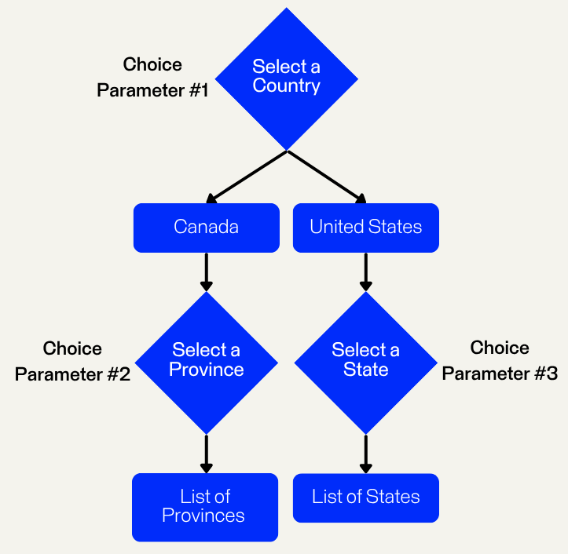
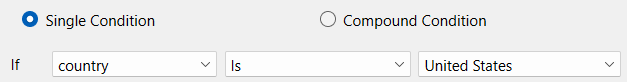
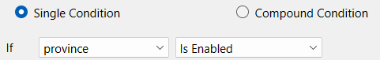
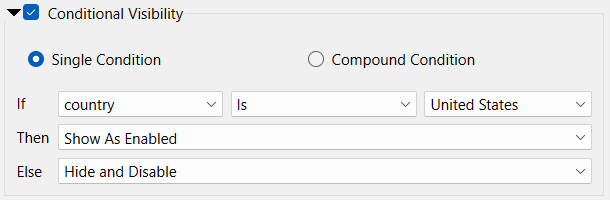
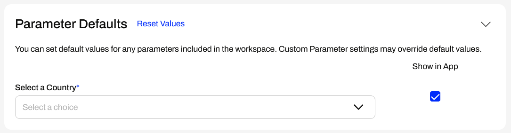
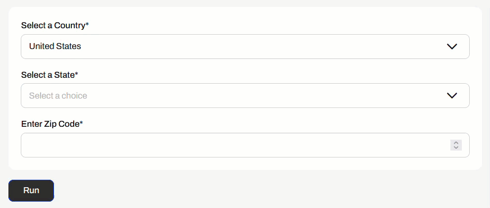
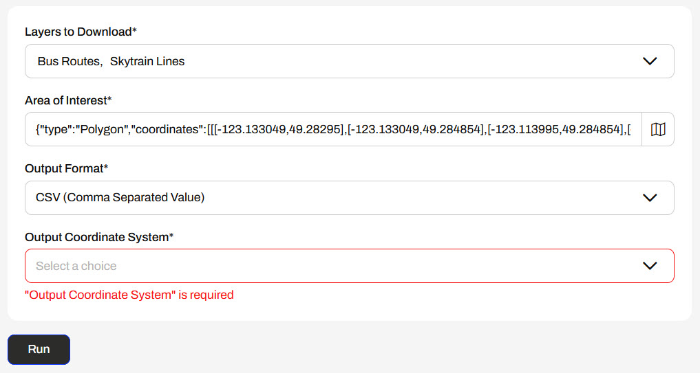
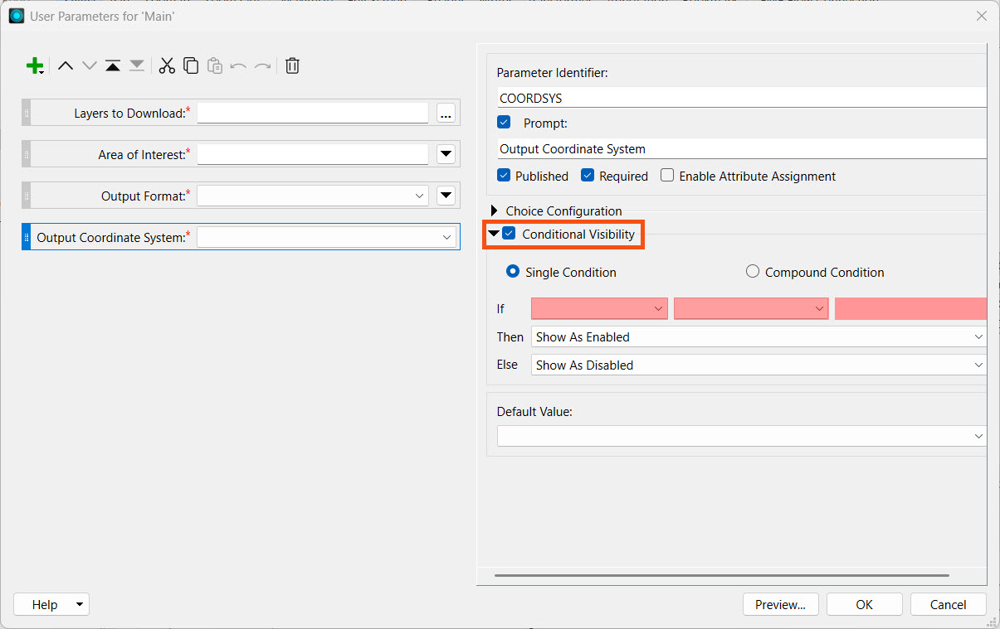

After completing this lesson, you'll be able to:
The content used in this lesson builds on the previous lesson. To do this exercise, you may continue with your workspace from the exercise in Spatially Query Data, or begin with the TransitDataDistribution-complete.fmw workspace.
Conditional Visibility of Parameters
Conditional parameters allow you to control the visibility settings of parameters based on the value of one or more previous parameters. At runtime, parameters may be hidden or disabled based on values input to prior parameters in the list. The value of a previous parameter is used in an If-Then-Else condition to control the visibility of the parameter, given the outcome of the condition.
For example, you have a workspace that queries data based on countries, states, and provinces, for which you create three choice user parameters. However, if you select Canada as the country, you do not need to prompt the user to choose a state, and vice versa with the United States and provinces. Conditional visibility of the state and province parameters allows you to display them only once a value is input to the first parameter.

You can extend the conditional visibility of parameters to all other types, including, but not limited to, checking yes or no, uploading files, selecting geometry, and text inputs. Conditional visibility of parameters enables you to maximize and customize your FME workflows, particularly with FME Flow Workspace Apps that utilize user input to workspaces.
Creating Conditional Parameters
You set and control the conditional visibility of user parameters when you create and edit them in FME Workbench. To conditionally control a parameter's visibility, you enable conditional visibility in the parameter's settings. You then have the option to use a Single or Compound Condition for the If-Then-Else condition.
The If statement is structured so that you select a parameter for the first value, then the condition value (Is, Is Not, Contains, Is Empty, etc.), followed by the value to evaluate the condition on. For example, you only want to enable the state parameter if the Country parameter value is the United States.

If the condition value does not require a value to complete the expression, the third value will disappear. For example, you may only want to display a Postal Code text parameter if the Province parameter is enabled.

The Then and Else set the parameter behaviour based on whether the condition is true or not. You may choose whether to enable, disable, or hide the parameter.

For example, if you select the United States for the Country parameter, the State parameter will enable; otherwise, if you choose Canada as the Country, FME will hide the State parameter and disable it.

When you run your workspace, the parameters will appear and be enabled conditionally after you input previous parameter values.

For more information on creating conditional parameters, see our documentation on Creating and Modifying User Parameters and our tutorial on Working With Conditionally Visible Published User Parameters in FME Form.
Using Conditional Parameters on FME Flow
Conditional parameters behave the same on FME Flow as they do when you run your workspace on FME Workbench. Hidden parameters will not appear on FME Flow until you populate previous parameters and complete the condition for the parameters to display.

When you create an FME Flow App, the Parameter Defaults section will hide hidden parameters unless the default parameter values meet the condition to enable them. You may not be aware of additional parameters that will display to the user in the app before you create it.

Once you set a default value, the conditional parameters may appear or disappear if the default value changes a condition result.

When you set parameters in a Workspace App, they will function the same as in FME Workbench and on the Run a Workspace page.

Exercise

Jennifer continues to work on her Transit Data Distribution app. One of the output format options is a CSV file. Sometimes CSVs store spatial data records as coordinates; however, the CSV output by Jennifer's workspace does not contain any coordinates, only non-spatial records for the data. In Jennifer's workflow, it does not make sense to have users who select CSV as the output format to input coordinate systems, since the data is not stored spatially. The coordinate system parameter is also required, so users must enter a value to run the app.

Jennifer will add a conditional clause to the coordinate system parameter so that it is not displayed on the app if the user selects CSV as the output format. Follow along with Jennifer as she creates a conditional parameter for her workspace in her app.
Jennifer returns to her workspace (C:\FMEData\Workspaces\CreateDataIntegrationApps\TransitDataDistribution-complete.fmw) in FME Workbench.
Jennifer right-clicks User Parameters in the Navigator and selects Manage User Parameters...
She selects the Output Coordinate System parameter and toggles on Conditional Visibility.

Jennifer sets the single condition so that if a user sets the GENERIC_FORMAT parameter to CSV (Comma-Separated Value), the parameter hides and the user cannot see it. If the format is anything else, the parameter will be enabled.

Jennifer clicks OK to close the window.
Jennifer clicks Republish to update the workspace on FME Flow.

If the Republish button is disabled, click Publish and repeat the publishing process. Ensure you name the workspace TransitDataDistribution.fmw, save it in the Training repository, and select the Job Submitter, Data Download, and Data Streaming services.
Jennifer checks the translation log to confirm her workspace has successfully republished to FME Flow.
If you did not complete the previous exercise in Spatially Query Data, please create a new Workspace App with the workspace you published in Step 3, then open it in you web browser.
Jennifer goes back to her Transit Data Distribution app in her web browser. She refreshes the page to ensure the app uses the updated workspace.

Once the app refreshes, Jennifer sets values for the Layers to Download and Area of Interest parameters. For the Output Format, Jennifer selects CSV (Comma Separated Value).

As soon as she selects CSV, the app hides and disables the Output Coordinate System parameter, and Jennifer clicks Run without having to choose a coordinate system. The app runs the workspace and returns the CSV to Jennifer in the data download zip file.
Jennifer has successfully used a conditional parameter in a self-serve Workspace App to disable a parameter when a workspace user sets a previous parameter to a specific value.